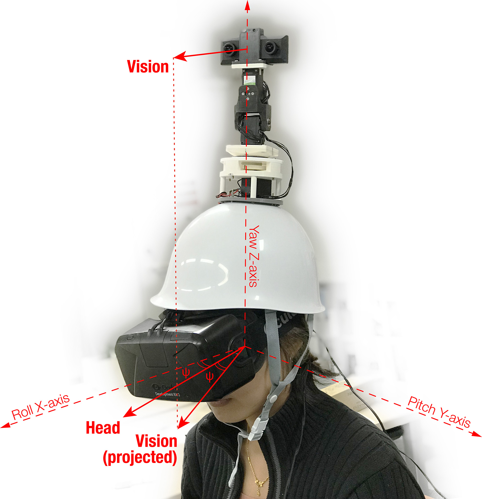

Unconstrained Neck: Omnidirectional Observation from an Extra Robotic Neck
Lab Research
English /
中文
Due to the narrow range of motion of the neck and the small visual field of the eyes, the human visual sense is limited in terms of the spatial range. We address this visual limitation by proposing a programmable neck that can leverage the range of motion limits. Unconstrained Neck, a head-mounted robotic neck, is a substitution neck system which provides a wider range of motion enabling humans to overcome the physical constraints of the neck. Using this robotic neck, it is also possible to control the visual/motor gain, which allows the user to thus control the range and speed of his effective neck motion or visual motion.
由于颈部狭窄的活动范围和眼睛狭小的视场，人类的视觉在空间方面受到限制。我们提出用能够改变活动范围的可编程颈部来解决此问题。名为Unconstrained Neck头戴机械颈部是一套颈部代替系统，此系统拥有更加宽广的活动范围，让人类得以克服颈部的生理极限。使用这个机械颈部的时候，调整视觉-运动增益可以被调节，正因此用户可以控制实际颈部动作的范围和速度，进一步影响引发的视觉运动。


Lichao Shen, MHD Yamen Saraiji, Kai Kunze, and Kouta Minamizawa. 2018. Unconstrained Neck: Omnidirectional Observation from an Extra Robotic Neck. In Proceedings of the 9th Augmented Human International Conference (AH '18). Association for Computing Machinery, New York, NY, USA, Article 38, 1–2. DOI:https://doi.org/10.1145/3174910.3174955